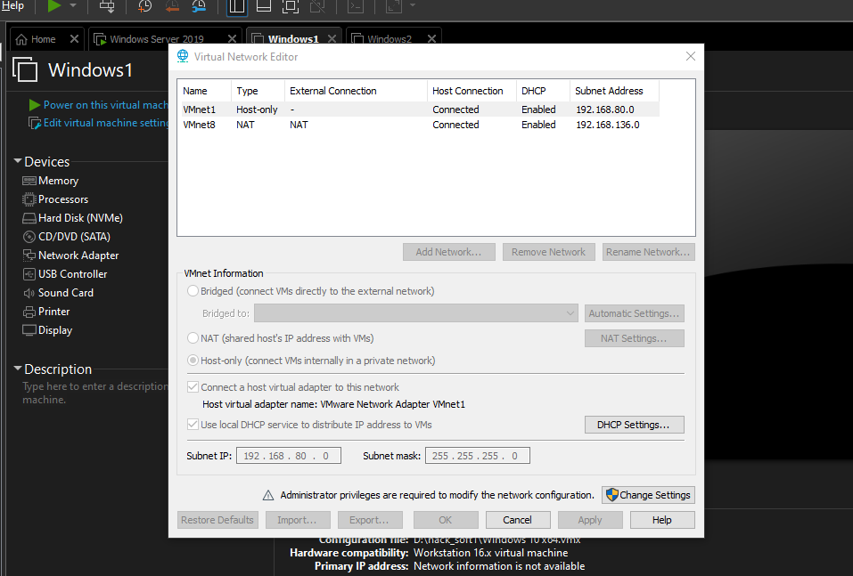

shit both windows machine
network A is in its own domain and it is in subnet 192.168.57.0/24
also there is domin controller and windows 10 1 machine in same subnet
bt this windows machine also has a subnet of its own of 10.10.10.0/24 which we arent known of when we ar eon a pentest
bt when explouiting this windows 1 machine which has dula network then we have the liberty to expliut this network too
we are gouing to access a machine (windows 2) whcih we have no access through an intermediaey machine(windows 1)


do these changes
now bring windows1 machine over

do this for windws 1 and for windows2 do the following

so peter parker will only be on 10.10.10.10.0 only
and fcastle will be dual homed could talk to dc as well as local peter parker too
login fcastle as normal fcastle:Password1
and on peter parker as Admin

for fcastle ka machine
thus this 10.10.10.128 is the new one
and peter parker ka is :

so we should be able to ping this peter from fcastle wala

and fcastle ka 192 wala address hsould be abele to pung fro our kali machone